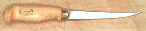

SAFARI
Users
- General & History
- Types of Knives
- Knives You Must Have
- Knives Really Nice to Have - when you need them
- Other Cutting Devices
- Sharpening Knives
- Care and Usage
General & History
The first manufactured knives were made of flint and similar stone, "napped" to a thin sharp edge. Suitable flint became an important article of trade, and some 30,000 years ago men learned how to roast the stone in hot fires so it would flake better. Flint knives were still used in Ancient Egypt for thousands of years after metal knives became available.
Some years ago scientists wondered if early man could actually dismantle a wooly mammoth with the stone knives available to them. Testing was easy because flint knives are still made by napping hobbyists and American Indian artisans. Applied to a large beast they proved surprisingly efficient, cutting well and keeping a sharp edge - if they chipped on bone they chipped sharp.
Flint was followed by bronze, then iron and finally steel, which is
actually just very pure iron with precisely controlled contaminants. Today
bronze tools are used only in explosive environments where sparks must be
avoided.
Photo © i0005.
Quality & Cost
A knife cut from an old saw blade salvaged from a lumber mill, if well designed, carefully made and properly maintained, will serve pretty much the same as a US $450 knife made of exotic metals by a famous maker in Japan and endorsed by a celebrity chef. Standard materials of good quality serve pretty much the same as fancy damasked steel a la Samurai sword. Design, durability, suitability for purpose and the practiced skills of the user (including sharpening skills) make the real difference.
On the other hand, really cheap knives and sets advertised on late night
TV will likely fail to please. I'm not saying cost is not at all an
indicator of quality, I'm saying that, after a point, there's a very
steep curve of diminishing returns. Of course, if your main objective is
to show off, then go for the top!
Photo © i0016.
Materials
- Carbon Steel: For the last couple thousand years, this
is what knives were made of. Making a proper carbon steel knife requires
skill and good equipment. The right alloy must be selected. The grain of
the metal is stretched and aligned by rolling or forging. It is then hardened
by heating to a precise temperature and quenching (chilling) at just the
right rate. It will then be very hard but very brittle, so the temper
is drawn at a very specific moderate temperature for an exact amount
of time, making the blade softer but stronger. Differential tempering can
be done so the edge is very hard and the back is tougher. Finally the
blade is ground and polished to its finished form.
Good carbon steel knives have a very sharp feel (when properly sharpened) and they sharpen easily. The edge can be refreshed with a "sharpening steel" between real sharpenings. On the negative side, they rust instantly if not properly cared for. Today carbon steel knives are used mainly by professionals who like the cutting feel.
Other negatives are that that they can discolor some vegetables, particularly eggplant, and can leave a faint metallic taste on acidic fruit like lemons. They are brittle (but not nearly so brittle as ceramic knives), so the tips can be broken if badly mistreated.
- Stainless Steel: The first stainless steel knives were
made of very corrosion resistant 300 series stainless. Pretty, but
nearly worthless for cutting - which is why mid 20th century texts
tell you to avoid stainless knives.
With the advent of alloy 440A, stainless knives totally eclipsed the carbon steel knife. Knives made from 440A and similar alloys are less shiny and can show some signs of rust if mistreated. Marketeers call these "high carbon stainless", but actually they're "high iron", not carbon. Magnets will stick to them but will not stick to 300 series. You won't see 440A mentioned much any more because most makers now have their own specialty alloy, though most are pretty close to 440A.
Really cheap knives and late night TV specials are made of inferior grades of stainless steel, for the simple reason that it's cheaper to fabricate them from these softer grades.
Good stainless steel knives do not rust (noticeably) and hold their edge quite well. They can be as hard as or harder than carbon steel blades if the manufacturer desires, but stainless is tough and less likely to chip or break. They are, however, more difficult to sharpen, and the "sharpening steel" is of little worth with these knives. They will not discolor eggplant or leave a metallic taste on acidic fruit, even without a costly titanium outer layer.
- Ceramic: Ceramic knives are very useful for SCUBA divers,
bomb disposal teams and terrorists, but have limited use in the kitchen.
They chip and break rather easily and should not be used where they might
contact bone, frozen foods or other hard materials, and they must not be
dropped. Because of their fragility they are available in a limited range
of sizes.
Ceramic knives have one big advantage in the kitchen - the ceramic material is so hard it can be used for a very long time before it needs sharpening, and that is the main (only?) selling point. When it does need sharpening only a diamond hone will do the job. Of course, if you learn to sharpen your own knives as I suggest here, this feature is of limited interest.
- Hardness: Much is made by some manufactures of the
hardness of their blades, fairly confident it will be meaningless to
customers. Hardness is measured, except for ceramic blades, on the
Rockwell C scale (Rc). Most stainless steel kitchen knife blades are
between Rc 54 and Rc 59. Japanese knives tend to be Rc 60 to Rc 62.
European makers stay around the soft end. I suspect this is because
so many people still insist on using the obsolete sharpening steel
which works best with a soft blade.
While harder blades hold an edge longer, you don't necessarily want the hardest Rc you can get, because with hardness comes brittleness. At around Rc 65 and up steel becomes so brittle it will shatter like glass. There are methods to increase the hardness of surface and edge while keeping the core relatively soft for strength.
Fabrication Methods
There are two fabrication methods - forged from billet and stamped from sheet. Perfectly usable knives can be made by either method.
- Forged Blade:
This is the best method for making knives. Despite what you may have read in foodie magazines, forged blades are not "cast". A cast blade would be unusably weak. A bar of steel is smashed into rough shape in a cavity mold by a giant forging press. The rough blank is then ground to final shape and finish. The objective of forging is to squish the metal, causing it to flow, resulting in a grain flow pattern that contributes to strength. From that point the metal must not be heated so hot the grain structure reforms. - Stamped Blade:
This method is less expensive, requires a lot less tooling and involves a lot less finishing work than forging. A giant press using a cutting die stamps the rough blank out of a sheet of metal of the desired thickness. It is then ground to final shape and finish. This would seem inferior to forging due to the grain flow issue, but it's less inferior than you might expect. The sheet from which it is stamped is invariably cold rolled to thickness, providing a grain flow that, while not so ideal as forging, is still pretty good. Again, the metal must not be heated so hot the grain structure reforms.
Knives You Must Have
General Prep Knife
This is the knife you will have in your hand most of the time, so it's the one you want to spend your money on. It is most often a Chef's Knife, a title that encompasses a wide and confusing range of sizes, shapes and prices. Myself, I very much prefer the Mioroshi Deba (photo), thicker, shorter and sturdier than a typical Chef's Knife but thinner and longer than a regular Deba.
Vegetable Slicing Knife
 The premier vegetable slicing knives are the Santoku and Nakiri. They
provide much greater precision than available from a Chef's knife or
Deba. Unfortunately volumes of nonsense have been written about the
Santoku, often calling it "the ideal knife" - but it's a fine
Vegetable Slicing Knife -
nothing more. The Nakiri is more limited - it slices the same but has
no point.
The premier vegetable slicing knives are the Santoku and Nakiri. They
provide much greater precision than available from a Chef's knife or
Deba. Unfortunately volumes of nonsense have been written about the
Santoku, often calling it "the ideal knife" - but it's a fine
Vegetable Slicing Knife -
nothing more. The Nakiri is more limited - it slices the same but has
no point.
Utility / Cook's Knife
and/orParing Knife
Shown in the photo is my ancient Sabatier utility knife. Utility / Cook's
knives run 5 to 6 inches long. Paring knives are similar but smaller and
shorter (3-1/2 to 4 inches). Some specialty paring knives are as short as
2-1/2 inches.
Utility Knife.
Swivel Peeler
This is why I don't own a paring knife. A Swivel Peeler peels much more easily, evenly and waaaaay faster. For any actual cutting, one of my regular kinives will do just fine.
Of the two forms shown, I very greatly prefer the Y shaped draw
knife form. It is much less fatiguing and more natural to hold than the
traditional knife form. Most manufacturers now make both forms.
For more details see Swivel Vegetable
Peeler page.
Chinese Cleaver Knife - and Mallet
Enthusiasts of Chinese cuisine consider using no other knife, but it's nearly useless for Western style prep. The Cleaver Knife is a very good fit for the way things are cut in China, because in China things are cut that way because they cut with a Cleaver Knife (actually, they do have other knives in China).
On the other hand, I wouldn't think of being without
a razor sharp Chinese Cleaver Knife
and a soft faced mallet with which to drive it through chickens, fish,
spare ribs and many other stiff or hard foods, with perfect precision,
cutting exactly where you want to cut.
Knives Really Nice to Have
These knives are excellent for the tasks for which they were designed, but if you don't do those tasks they won't be of much use to you.
Bread Knife
This is the one place you definitely want a knife with a serrated edge. This allows you to saw through the tough crust without applying so much pressure you crush the tender bread within.
Boning Knife
Great for separating meat from bone with a minimum of effort and a minimum of waste, but of little use to the vegetarian. The Boning Knife must be razor sharp to be of much use. Stone it early and often.
Filleting Knife
 Designed for disassembling fish, this thin flexible knife with a razor edge is excellent for that task, but pretty useless for anything else. The Filleting Knife must be accompanied by a stone because its delicate edge needs to be resharpened often, usually before the next fish.
Steak Knives
This is a great place to waste money. Yes, if you serve large hunks of meat on a plate, each person needs a steak knife. You can get a nice set of six Wusthof Classic steak knives for only 2020 US $528 (that's list, don't pay more than $350 on the Intenet - what a bargain!). Of course they'll be dull where they touch the plate in no time. That's why most steak knives are serrated, so only the peaks touch the plate and get dull. Unfortunately, serrated knives don't cut, they shred and tear - quite unpleasant and considered bad form.
I buy my non-serrated Steak Knives
at a local Asian market for $1.39 each. They work just fine and it takes
only a moment to stone the tips sharp after use (only 1/2 inch or so up
near the tip ever touches the plate and gets dull). You just don't need
a super-knife for this application - unless your purpose is to show off.
Julienne Swivel Peeler
This looks like a regular vegetable peeler, but it has a row of slicing teeth behind the cutting blade which slice the peel into narrow strips. It can save a lot of time, particularly with carrots. You can use the narrow strips as is, or chop them crosswise for uniformly tiny pieces.
The photo specimen is "Titan" brand and is excellent. I also own an
Oxo, a device Oxo should be thoroughly ashamed of. For more details see
our Julienne Peeler page.
Meat Cleaver
Actually this knife is used on bones not meat. It's very useful for splitting bones for use in making soup stock. About the stupidest thing I've ever read about knives is, "It's not important for a meat cleaver to be sharp". The hell it isn't! The edge of your Meat Cleaver should be stoned as sharp as any other knife, just at a steeper angle to make a more durable edge. The last thing you want is a dull cleaver that skids rather than bites - sending heavy bones flying across your kitchen breaking stuff. For details and usage see our Meat Cleaver page.
Mezzaluna
This knife is used mainly in the Mediterranean region and by people from there. It is particularly used for chopping the large amounts of fresh herbs used in that region. The herbs are piled on the cutting board and the knife is rocked smoothly back and forth rather than chopping up and down.
There are also versions that have a single bridge handle you grasp in
the center like a Ulu, and versions with more than one blade for even faster
chopping. For details see our
Mezzaluna page.
Ulu
Superficially similar to the Mezzaluna, but differing greatly in use, this knife is very popular in Alaska. It is used for general slicing, chopping, boning meat, scraping hides and many other tasks.
The photo specimen is an example of a native Alaskan Ulu, hand made, probably from an old sawmill blade. It has seen at least 50 years of service.
Fancier versions can be ordered from various sources in Alaska and from
some knife vendors. These vendors also sell a concave chopping block to go
with them - but I have it on expert authority this is not authentic, but
aimed at the non-native market. In their natural environment
these knives are used against either a flat block or a hide depending on
what is being cut.
Photo © William Oxley, by permission.
Oyster Knife / Clam Knife
Actually not a knife but a pry bar - the edges are quite dull. An oyster knife is shown, a clam knife is much the same but with a longer blade. The photo specimen is from Oxo and is a little odd in that most Oyster Knives have a larger flange where the handle meets the blade. I didn't find the smaller flange to be a problem, but the blade proved a bit soft and bendy for our huge Pacific oysters.
Other Cutting Devices
Mandolin
This is a very flexible device and a tremendous help when you need to cut or slice a lot of vegetables. Shown in the photo is the Oxo 1054752. Not only does this device slice to any thickness you wish to set (up to about 3/8 inch) but it will also julienne, cut fries, and do ripple cuts as well as straight cuts. I use mine mainly for cutting cucumbers and potatoes, and other things that must be cut thin and very uniform in thickness
Keep one thing in mind - the Mandolin
is a very dangerous device which should be used only by
consenting adults who are not currently impaired by drugs or alcohol, or
working under distraction, and must be kept completely away from children
and teens. Accidents with a mandolin don't just cut, they commonly take
a chunk of flesh, and heal slowly.
Sharpening
Every article I read about knives tries to protect you from the truth - and the truth is, you have to learn to sharpen your own knives - and you have to learn to do it with stones. Forget about motorized knife sharpeners. At best they remove too much metal, eventually ruining your precious knives, which should last a lifetime, and at worst they do a lousy job of sharpening. They are partuclarly bad with knives that use a finer edge, or are sharpened from one side only.
This subject is so important I've written a separate page about Sharpening Knives - and no, it really isn't that hard. If you can learn to slice thin, you can learn to sharpen, and the rewards are great.
Care & Usage
Dos and Don'ts
- Knives are very dangerous: Keep that in mind. They would as soon cut you as anything else, and they are particularly dangerous if not kept properly sharp, or if placed where they could be contacted accidentally. When using knives, avoid distractions, and keep them away from children and teens. Always store them properly (see below).
- Never, never put knives in the sink. Doing so is very dangerous for your hands, the most common cause of serious injury in restaurants. It will also result in dull and damaged cutting edges. Knives should stay on the cutting board until hand cleaned and properly packed or stored.
- Never put knives in the dishwasher. Aside from being hard on the knives, particularly the handles, it's just an accident waiting to happen.
- Never store knives in a drawer, unless the blades are completely covered by a sturdy sheath intended for that kind of storage. Storing them bare will just about guarantee the cutting edge will become damaged, and it's very dangerous for fingers and hands.
- Do Not Ever cut against a glass, ceramic, metal or other hard surface. Your knife will be instantly dulled at the point of contact. The only situation where this is allowed is with Steak Knives.
- Do Not Scrape stuff around on your cutting board with the sharp edge of the knife - that's what the back side of the knife is for. Develop the habit of automatically rotating your wrist when scraping. It is OK to scoop stuff up with the sharp edge though.
- Use a Proper Cutting Board: That will be a hardwood or plastic board made expressly for cutting use. Tests have shown there is no hygienic advantage to one or the other, so choose based on your preference. I strongly prefer a very thick end grain wood cutting board. If you move your board around a lot you may prefer something lighter. Butchers here in California use plastic because wood end block doesn't stand up well to the constant steam cleaning required by regulations.
Proper Storage
Knives should stay on the cutting surface until properly cleaned and put away. A household cleanser does a fine job of cleaning, but remember to clean the handle too, it could have acquired bacteria. Stainless knives can be put away as soon as they are dry. Carbon steel knives should be given a light coating of oil wiped on with a piece of paper towel. Mine are exposed to the elements at an often open window, so they have a black oxide patina. This does no harm, provides some protection from red rust and holds oil better than bare metal.
Knife Blocks
A bad idea. These tempting goodies are particularly used as an incentive to buy knives in sets. They are very pretty if you have plenty of extra counter space and never use your knives. In a real kitchen where knives are used under often hectic conditions, they will soon become repositories for mold, fungus and bacteria of all kinds. Yumm! They are not cleanable. Knives bought in sets are usually not all ideally suited to your actual usage anyway. Photo © i0019.
Magnetic Knife Rack
Magnetic knife racks are very popular and a practical way to keep knives safely out of the way but instantly available. Most sold for household use are about half the length of the one in the photo - but that's the only decent photo I could find. The rack should be mounted in a location that's easy to reach, but where no damage will be done should you accidently let one slip while you rack or retrieve it.
Of course these racks will not hold ceramic knives, nor knives made of
"real" stainless (300 series), but this material has mercifully gone out
of use for knives.
Photo © i0018.
Wood Knife Rack
Wood racks can be ideal for knife storage - but you'll probably have to make your own or have one made. The one shown is mine, made from a strip of bare unfinished oak cut into three pieces. The slotted top rail is indented in the center so knives won't accidentally slip out of their slots, but they can easily be lifted slightly and brought out straight forward.
You can just see the wire bale (made from a painted clothes hanger)
that keeps the badly balanced knives (utility knife and santoku) from
doing a back flip out the window. This rack has seen daily service for
maybe 30 years.
Drawer Storage
You may wish to store less often used knives in a drawer. To protect the knife. and your hands, a proper storage protector is essential. There are a number of economical varieties available. The one shown is by Lamson-sharp, available in sizes for knives from 3 inches to 10 inches. Victorinox has magnetically secured folders and there are plain sheaths available from other vendors. Photo © Lamson & Goodnow.